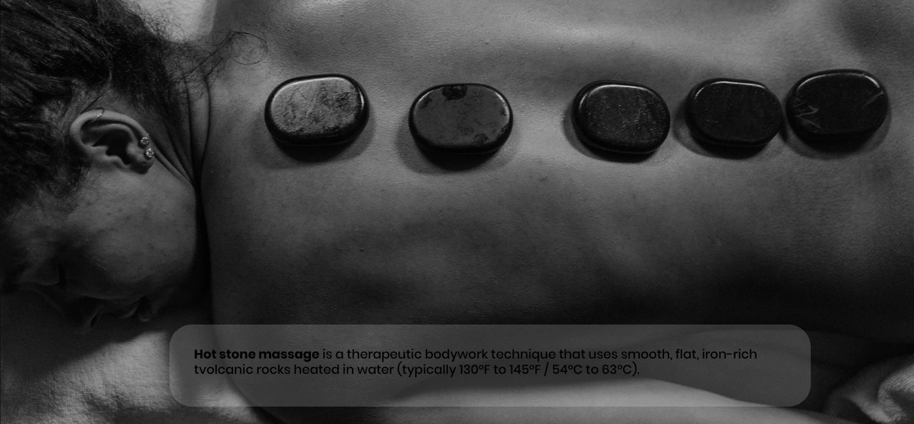
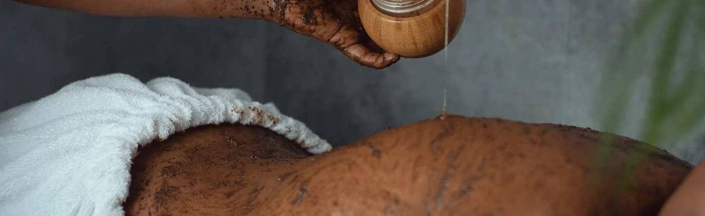

01 / RELEASE
01 / RELEASERestorative touch
Swedish, deep tissue and aromatherapy. Time to let the day go.
THE CITY CAN WAIT.
A slower rhythm. A deeper breath.
A little time to feel like yourself again.
A WARM WELCOME TO SUNFLOWER
Your everyday deserves a beautiful pause. From a slow, soothing massage to a complete body ritual, find a moment that feels like it was made for you.
Visit our new Kisasi home opposite Black Panther Bar, or find your familiar escape on Kiwanda Road, Bukoto.
Find your Sunflower ↗
 01 — A WARMER WELCOME
01 — A WARMER WELCOMETHE ART OF TAKING CARE
Choose what you need today.
Combine treatments to make the visit yours.
All prices in Uganda shillings (UGX).
01 / RELEASESwedish, deep tissue and aromatherapy. Time to let the day go.

02 / REBALANCEHot stones, warm towels and thoughtful rituals for your next reset.

03 / RENEWBody scrub, steam and a Moroccan bath. A little more care for you.

A DIFFERENT PACE, A LITTLE CLOSER
BEHIND OUR DOORS
A glimpse of Sunflower.
Real spaces. A warm welcome.
FIND YOUR NEAREST ESCAPE
Opposite Black Panther Bar
Kisasi, Kampala
Kiwanda Road
Bukoto, Kampala
A LITTLE TIME, JUST FOR YOU
Choose your branch. Choose your treatments. We’ll take it from there.